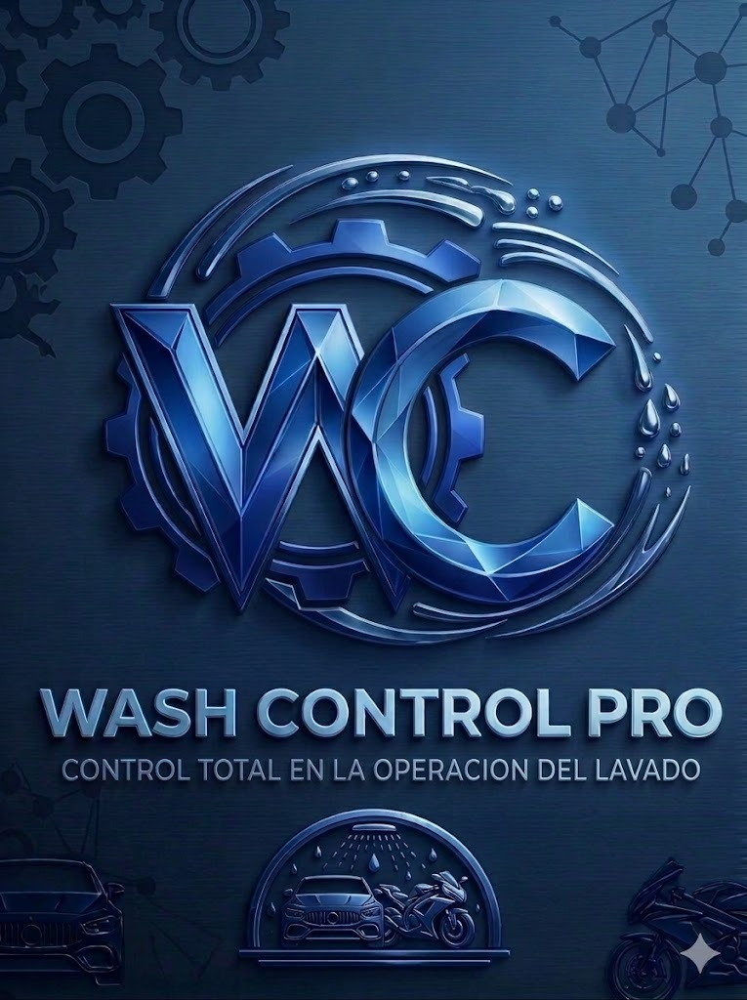

Control Centralizado Antifraude y Métricas Reales
BLINDA TU CAJA Y OPERACIÓN CON
BLINDA TU CAJA Y OPERACIÓN CON
WASH CONTROL PRO
Toma el control absoluto de tu autolavado desde un único dispositivo en pista. Monitorea el flujo diario, blíndate contra reclamaciones falsas y descarga cierres de caja perfectos en Excel.


Demostración en Video
Mira el Sistema en Acción
Descubre cómo registrar turnos de forma ágil, blindar el inventario de valor y automatizar las cuentas de tu pista.